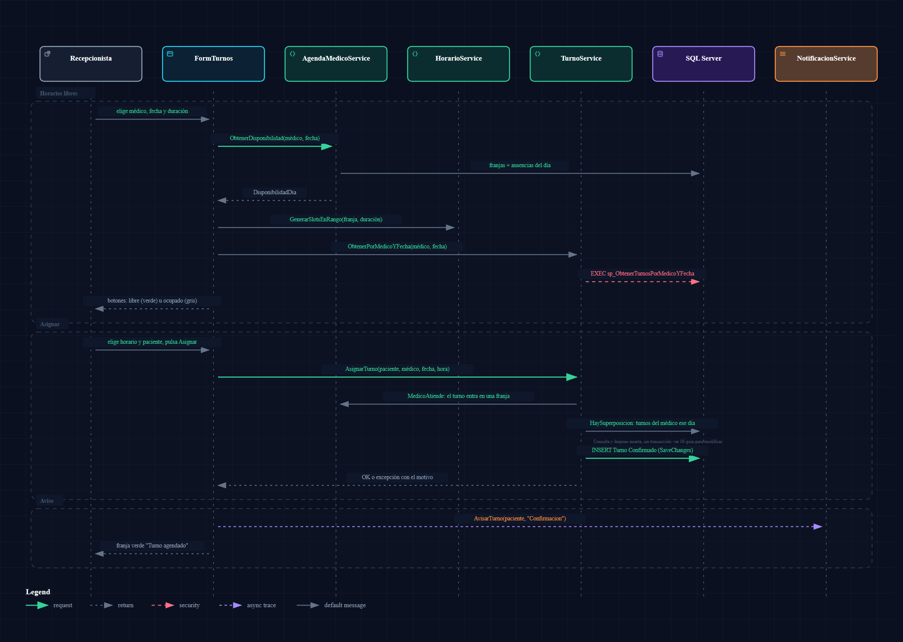
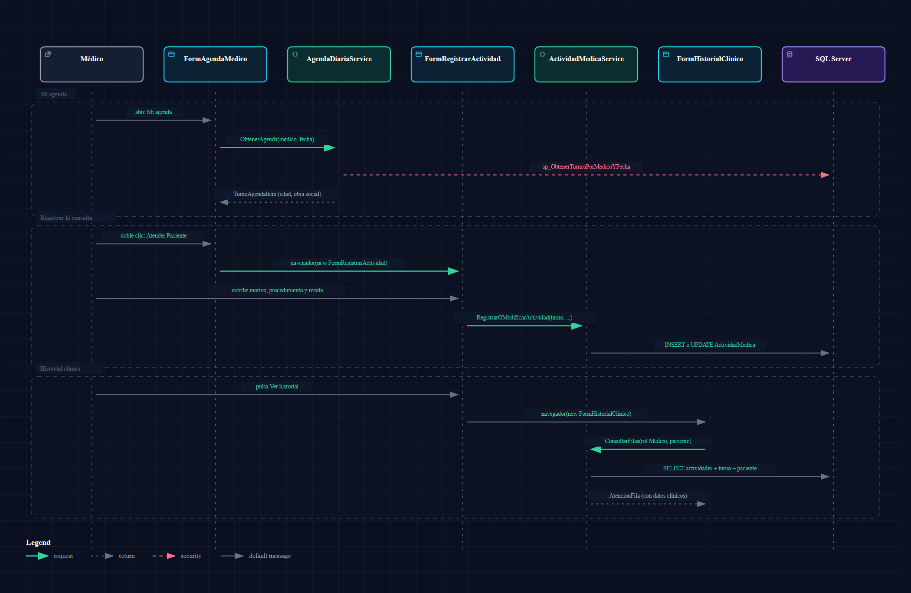
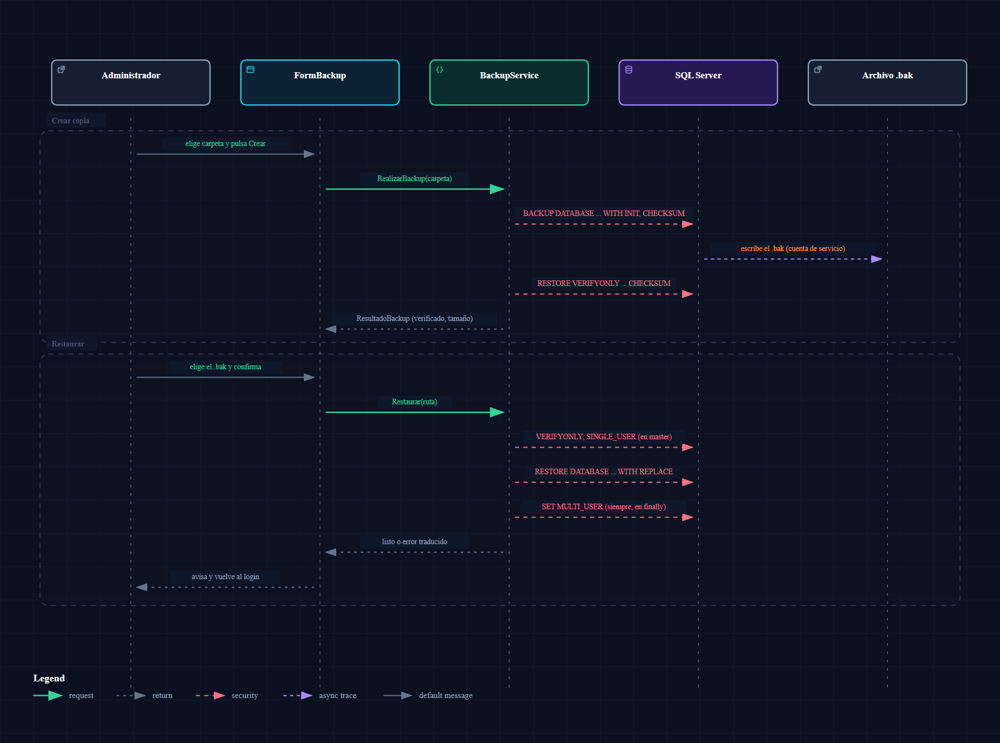

FACENA - UNNE · Licenciatura en Sistemas de Información
Manual de Usuario Oficial
Sistema de Gestión de Consultorio Médico (SGC)
Guía práctica y visual paso a paso para el uso operativo de todas las funciones del sistema: Recepcionistas, Médicos y Administradores.
Contenido del Manual
- Introducción y Primeros Pasos (Requisitos, Conexión a Base de Datos y Credenciales)
- Interfaz General y Navegación (Pantalla de Inicio, Menú Lateral y Filosofía de Diseño)
- Módulo de Recepción (Guía del Recepcionista)
- 3.1 Gestión de Pacientes (Alta, Edición, Búsqueda y Validación)
- 3.2 Asignación Inteligente de Turnos y Horarios Libres
- 3.3 Reprogramación y Cancelación de Citas
- 3.4 Confirmación de Asistencia y Cobro de Copagos por Obra Social
- Módulo Médico (Guía del Profesional de la Salud)
- 4.1 Mi Agenda Diaria y Sala de Espera
- 4.2 Registro de Actividad Clínica (Diagnóstico, Procedimiento y Receta)
- 4.3 Consulta del Historial Clínico Confidencial
- Módulo de Administración (Guía del Administrador)
- 5.1 Alta de Obras Sociales y Padrón de Médicos
- 5.2 Configuración de Agendas Semanales
- 5.3 Registro de Vacaciones y Ausencias Programadas
- 5.4 Gestión Segura de Usuarios y Asignación de Roles
- 5.5 Generación y Restauración de Copias de Seguridad (.BAK)
- Módulo de Reportes Estadísticos y Exportación CSV
- Guía de Mensajes Frecuentes y Resolución de Problemas
1. Introducción y Primeros Pasos
El Sistema de Gestión de Consultorio (SGC) es una aplicación orientada a simplificar la administración diaria de clínicas y consultorios médicos ambulatorios. Su diseño moderno permite coordinar turnos, recepción de pacientes, atención clínica y control de caja de manera fluida.
1.1 Requisitos del Entorno
- Sistema Operativo: Microsoft Windows 10 u 11 (64 bits).
- Entorno de Ejecución: .NET Desktop Runtime 8.0 o superior.
- Base de Datos: Microsoft SQL Server 2017/2019/2022 o SQL Server Express.
- Resolución de Pantalla: 1280x720 mínimo (1920x1080 recomendado). Soporta escalas de Windows al 125% y 150%.
1.2 Configuración Inicial de Conexión
En la carpeta de la aplicación existe una plantilla de configuración denominada appsettings.example.json. Para personalizar la conexión a su motor de SQL Server:
- Copie el archivo con el nombre
appsettings.Local.json.
- Indique su cadena de conexión en el parámetro
ConnectionString (ejemplo: Server=.\SQLEXPRESS;Database=SGC;Trusted_Connection=True;TrustServerCertificate=True;).
- Al iniciar la aplicación por primera vez, el sistema detecta la base de datos, ejecuta las migraciones automáticas y carga los datos de demostración si la base está vacía.
1.3 Cuentas de Acceso de Demostración
| Usuario | Contraseña | Rol Asignado | Propósito |
|---|
admin | admin123 | Administrador | Control total de configuración, médicos, horarios, usuarios, backups y reportes globales. |
recepcion | recepcion123 | Recepcionista | Gestión diaria de turnos, pacientes, confirmación de asistencia y cobro en mostrador. |
medico | medico123 | Médico | Agenda del día, evolución médica y consulta confidencial de historias clínicas. |
2. Interfaz General y Filosofía de Diseño
El SGC aplica un diseño consistente y unificado en todos sus módulos para que cualquier usuario aprenda a operarlo en pocos minutos:
- Tarjeta Numerada a la Izquierda: El formulario de captura o edición sigue pasos lógicos («1. Datos», «2. Contacto», «3. Cobertura»). Al hacer clic en un registro de la lista, la tarjeta entra automáticamente en Modo Edición; con el botón «Nuevo» regresa a modo de alta.
- Grilla Interactiva a la Derecha: Muestra los datos cargados con campo de búsqueda rápida en tiempo real, filtros avanzados y contadores visuales con código de colores.
- Franja Inferior de Mensajes: Todas las confirmaciones y advertencias se muestran en una barra inferior clara sin interrumpir con cuadros de diálogo invasivos.
3. Módulo de Recepción (Guía del Recepcionista)
3.1 Gestión de Pacientes
Permite administrar el padrón único de pacientes que asisten al consultorio:
- En el menú lateral, haga clic en «Pacientes».
- Complete el paso 1 con Apellido, Nombre, DNI y Fecha de Nacimiento.
- En el paso 2, ingrese Teléfono y Correo Electrónico.
- En el paso 3, seleccione la Obra Social (deje en blanco si se atiende como Particular).
- Presione «Guardar». El paciente aparecerá inmediatamente en la grilla derecha.
Búsqueda Rápida: Escriba en la caja de búsqueda para filtrar al instante por apellido, nombre o documento. Si marca la casilla «Solo con ausencias», la grilla listará a los pacientes con historial de inasistencias.
3.2 Asignación Inteligente de Turnos
El sistema elimina por completo los errores de turnos superpuestos o asignados en horarios donde el médico no atiende:
- Haga clic en «Turnos» en el menú lateral.
- En la tarjeta izquierda, seleccione el Médico y la Fecha deseada.
- El sistema consultará la agenda real y calculará los Horarios Libres. Elija el horario haciendo clic en el bloque disponible.
- Seleccione al Paciente del selector desplegable.
- Presione «Asignar Turno». El turno queda guardado en estado
Confirmado.

Figura 3: Flujo de validación y confirmación en la asignación de turnos.
3.3 Confirmación de Asistencia y Cobro en Recepción
Cuando el paciente ingresa a la sala de espera:
- Localice el turno en la grilla y presione el botón «Confirmar Asistencia».
- Si el paciente asistió, seleccione «Asistió».
- El sistema calculará automáticamente el arancel a cobrar: si el médico atiende la obra social del paciente, calculará el copago con el descuento correspondiente; si no, sugerirá el precio particular.
- Seleccione el medio de cobro y presione «Confirmar». El paciente queda registrado para el médico en estado
Asistió.
4. Módulo Médico (Guía del Profesional)
4.1 Mi Agenda Diaria
Al ingresar con rol Médico, la pantalla inicial muestra directamente la Agenda del Día del profesional logueado:
- Tarjetas de Control Rápido: Conteo de turnos Totales, Atendidos, En Espera y Cancelados.
- Lista de Turnos: Grilla ordenada cronológicamente con nombre del paciente, DNI, horario y estado de atención clínica.
- Botón «Atender Paciente»: Abre directamente el registro de evolución para el paciente seleccionado.
4.2 Registro de Actividad Clínica
- Seleccione el Tipo de Actividad (Consulta General, Control, Estudio Clínico, Receta o Certificado).
- Escriba el Motivo de Consulta (campo obligatorio).
- Complete el Diagnóstico / Procedimiento y las indicaciones de Receta / Medicamentos.
- Presione «Guardar Atención». La evolución queda registrada de forma permanente e inviolable.

Figura 4: Proceso de registro clínico y evolución médica confidencial.
4.3 Consulta de Historial Clínico
En la sección «Historial Clínico», el médico puede buscar a cualquier paciente y revisar cronológicamente todas las atenciones previas realizadas en el consultorio, con fecha, médico tratante, motivo, diagnóstico y recetas emitidas.
5. Módulo de Administración (Guía del Administrador)
5.1 Configuración de Médicos y Agendas Semanales
- En «Médicos», registre al profesional indicando matrícula, especialidad, precio de consulta particular y marque las obras sociales con las que atenderá.
- En «Horarios», seleccione al médico, el día de la semana (Lunes a Domingo) y establezca el rango horario de atención (ejemplo: 08:00 a 12:00).
- Puede alternar entre la vista en listado y la Vista Semanal para verificar visualmente que no existan huecos ni solapamientos.
5.2 Carga de Ausencias y Cancelación Preventiva
Cuando un médico no pueda atender por congreso, licencia o vacaciones, ingrese a «Vacaciones/Ausencias»:
- Seleccione al médico, la fecha y el tipo de ausencia (Día completo o Franja horaria).
- Escriba el motivo y presione «Guardar».
- Comportamiento Automático: El sistema cancelará inmediatamente todos los turnos que coincidían con la ausencia, notificará a los pacientes e informará al administrador cuántas citas fueron canceladas para su reprogramación.
5.3 Copias de Seguridad y Restauración (Backup & Restore)
Para resguardar la base de datos ante fallas de hardware o traslados de equipo, el Administrador dispone del módulo «Copia de Seguridad»:
- Generar Respaldo: Presione «Crear Copia de Seguridad (.BAK)». El sistema interactúa con SQL Server y genera un archivo sellado con fecha y hora.
- Restaurar Base de Datos: Seleccione un archivo
.bak previo. El sistema verificará la cabecera del archivo para garantizar que pertenece a este sistema, solicitará confirmación estricta y restablecerá la base de datos ejecutando las migraciones que correspondan.

Figura 5: Procedimiento de respaldo y recuperación de datos del Administrador.
6. Módulo de Reportes y Exportación CSV
El módulo de Reportes brinda estadísticas estratégicas ejecutadas directamente en SQL Server mediante Procedimientos Almacenados:
| Pestaña | Descripción del Reporte | Gráfico Incluido | Roles con Acceso |
|---|
| Turnos por Período | Detalle de turnos en un rango de fechas con filtros de médico y estado. | Indicadores de estado | Todos |
| Recaudación | Total facturado agrupado por médico, medio de pago u obra social. | Barras de ingresos | Administrador |
| Asistencia | Tasa de asistencia real frente a ausentismo y cancelaciones. | Torta / Indicadores | Admin, Médico |
| Ocupación de Agenda | Porcentaje de aprovechamiento de los horarios médicos habilitados. | Barras de ocupación | Admin, Médico |
| Pacientes por Mes | Evolución mensual de pacientes atendidos a lo largo del año. | Barras comparativas GDI+ | Todos |
| Rendimiento Médico | Desempeño y volumen de turnos de cada profesional. | Tabla analítica | Administrador |
| Obras Sociales | Distribución de consultas por prestataria médica. | Barras horizontales GDI+ | Admin, Recepcionista |
Exportación a CSV: En cualquier reporte presione el botón «Exportar a CSV» para generar una planilla compatible con Excel con los filtros aplicados en el nombre del archivo.
7. Mensajes Frecuentes y Solución de Problemas
| Mensaje del Sistema | Causa Probable | Acción Correctiva |
|---|
| «El profesional no atiende en ese horario» | La hora elegida no cabe dentro de ninguna franja de la agenda semanal activa del médico. | Consulte los horarios libres del médico o elija otro día de atención. |
| «Existe un turno superpuesto para el médico» | Ya existe otra cita confirmada en ese mismo intervalo horario. | Seleccione otro de los bloques de horarios libres ofrecidos en la pantalla. |
| «No se puede asignar un turno en fecha pasada» | Se seleccionó una fecha anterior a la fecha actual del sistema. | Elija la fecha de hoy o una fecha futura en el calendario. |
| «No se puede desactivar al único administrador activo» | Se intentó dar de baja la única cuenta administradora del sistema. | Cree o reactive otra cuenta con rol Administrador antes de inactivar la actual. |
| «No se pudo conectar a la base de datos» | El servicio SQL Server está detenido o la cadena de conexión en appsettings.Local.json es incorrecta. | Verifique que el servicio de SQL Server esté en ejecución y revise el nombre del servidor o instancia. |